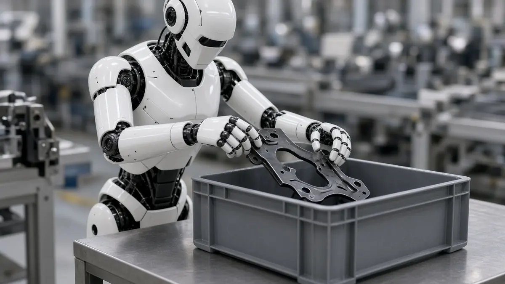
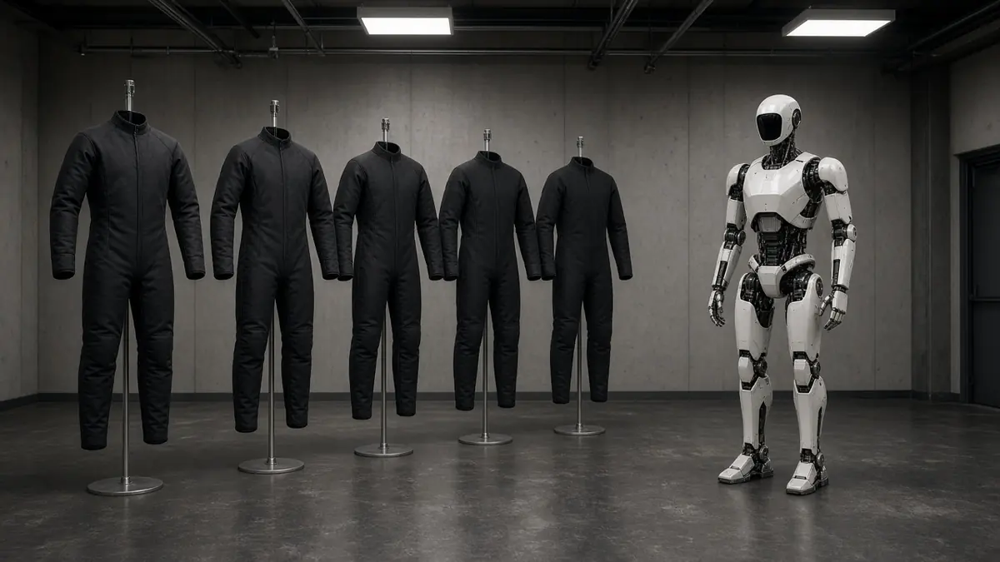

NEURA
NEURA aims to run five robot gyms by the end of 2026, the New York Times reports
Short answer: NEURA Robotics aims to have five robot-training gyms running by the end of 2026, including one already opened in Hangzhou, China, with ten more expected after that, the New York Times reported on 27 October 2026. The Indian Express carried the same report the next day. NEURA's chief told the Times that more than 2,600 applicants have asked for space at one of the sites.
The Times said a reporter was shown the gym NEURA developed with the Technical University of Munich, beside Munich Airport, where as many as 100 humanoid and other robots were training around the clock. In that account the robots picked up car parts, stacked boxes and tightened a grip on a glass as water was added, copying trainers who guided them from a distance. NEURA has signed dozens of automotive, logistics, pharmaceutical and other companies to train there and has not named them, the paper wrote. A skill learned by one robot is meant to reach the others through a shared cloud system. The opening of that gym, and the 4NE1 Gen 4 launch on 22 October, are in our earlier report.

The Times also reported that NEURA is working with Bosch and other companies to put sensor suits on more than 1,000 workers, recording how they move during ordinary shifts. Interact Analysis, a consulting firm, told the paper that more than 90 humanoid data-collection centres are running in China, at least 50 more are under development, and Europe has fewer than 10. "We are not efficient anymore," NEURA founder David Reger told the Times.

The same article says robots are expected to move into production at a BMW site by the first quarter of next year. The paragraph before it describes a pilot by Swiss firm Hexagon Robotics with BMW at a plant in Leipzig, and the production sentence does not name the supplier. The Times also wrote that Agile Robots, in Munich, is working with companies including Google DeepMind, and that the British firm Humanoid aims to place robots in Schaeffler's operations by the end of 2026. Zornitsa Todorova, a researcher at Barclays, told the Times the number of humanoids in use worldwide could rise from 15,000 last year to one million in 2030 if costs fall and rules do not block the way. That is her forecast, not a headcount. The Times reported that NEURA raised as much as $1.4 billion in June, that Tether led the round, and that Nvidia and Amazon were among the backers. NEURA told the paper that part of the sum was tied to milestones it was on track to meet. Related reading: Schaeffler's Taicang line and China's output and standards plans.
Sources
- The Indian Express (New York Times): In the AI robogym, machines train to be more like humans (28 Oct 2026; Times report dated 27 Oct 2026)
- DNYUZ, carrying the New York Times report: In the A.I. robogym, machines train to be more like humans (27 Oct 2026)
- The New York Times: In the A.I. robogym, machines train to be more like humans (27 Oct 2026)